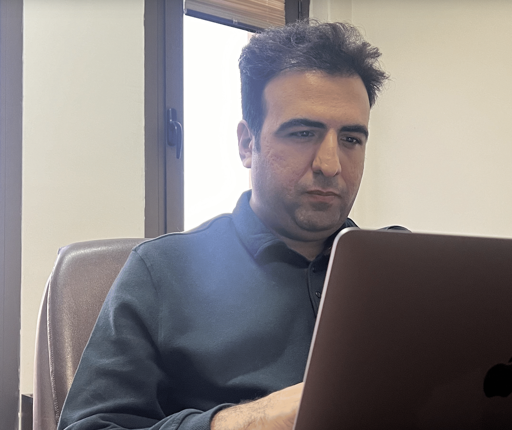

Welcome to the public page for the course on Security and Privacy in Machine Learning (SPML). The main objectives of the course are to introduce students to the principles of security and privacy in machine learning. The students become familiar with the vulnerabilities of machine learning in the training and inference phases and the methods to improve the robustness and privacy of machine learning models.
Course Logistics
- Time: Sun. & Tues. 10:30–12:00
- Location: Room 102 & vc.sharif.edu/ch/amsadeghzadeh
- Contact: Announcements and all course-related questions will happen on the Quera forum. All official announcements and communication will happen over the Telegram channel.
For external enquiries, emergencies, or personal matters that you don’t wish to put in a private post, you can email me at sadeghzadeh@sharif.edu.
Instructor

Amir Mahdi Sadeghzadeh
- Office: CE-718
- Lab: TSAIL (CE-503)
- Office Hours: By appointment (through email)
- Email: amsadeghzadeh@gmail.com
- URL: amsadeghzadeh.github.io
Course Staff
Arian Komaei Koma (Head Course Assistant)
Email:
ariankomaei@gmail.com
Javad Hezare (Head Course Assistant)
Email:
hezarej@gmail.com
Course Pages
- https://trustworthy-and-secure-ai-lab.github.io/SPML2026/ — Course information, syllabus, and materials.
- Quera (get the password from course staff) — Announcements, assignments, and all course-related questions.
Main References
No required textbook. This field moves faster than textbooks do. Every reading is a research paper. The main references for the course are many research papers in top-tier conferences and journals in computer security (SP, CCS, USENIX Security, EuroSP) and machine learning (NeurIPS, ICLR, ICML, CVPR, ECCV).
Grading Policy
- Assignments: 25%
- Project: 25%
- Mid-term: 20%
- Final: 30%
Course Policy
This course considers topics involving personal and public privacy and security. As part of this investigation we will cover technologies whose abuse may infringe on the rights of others. As an instructor, I rely on the ethical use of these technologies. Unethical use may include circumvention of existing security or privacy measurements for any purpose, or the dissemination, promotion, or exploitation of vulnerabilities of these services. Exceptions to these guidelines may occur in the process of reporting vulnerabilities through public and authoritative channels. Any activity outside the letter or spirit of these guidelines will be reported to the proper authorities and may result in dismissal from the class. When in doubt, please contact the instructor for advice. Do not undertake any action which could be perceived as technology misuse anywhere and/or under any circumstances unless you have received explicit permission from Dr. Sadeghzadeh.
Academic Honesty
Homework Submission
Submit your answers in a .pdf or .zip file
on the course page on the Quera website, with the following format:
HW[HW#]-[FamilyName]-[std#]
(for example, HW3-Hoseini-401234567).
Homework Policy
Important:
- All theory homework must be handwritten.
- Do not submit LaTeX or Word-formatted documents for theory assignments — these will not be accepted.
- If any part of your homework is detected to be written by AI, you will receive no score for that assignment.
- You may use AI tools for assistance (e.g., brainstorming ideas, clarifying concepts, or debugging), but you must not include AI-generated text directly in your submission. All submitted work should be written in your own words and understanding.
Late Policy
- All students have 11 free late days for the assignments.
- You may use up to 3 late days per assignment with no penalty.
- Once you have exhausted your free late days, we will deduct a late penalty of 24% per additional late day.
Course Project
Project instructions will be posted here.
Schedule
Provisional schedule; updates will appear here.
| Date | Lecture | Readings | Slides | Assignments |
|---|---|---|---|---|
| Module 1: Security of Machine Learning Models | ||||
| Oct 27Tuesday · 5 Aban | Course Intro & OverviewCourse Scope, Principles & Motivation |
|
||
| Nov 01Sunday · 10 Aban | Adversarial Examples IntroVulnerabilities of Deep Learning & Threat Models |
|
||
| Nov 03Tuesday · 12 Aban | Iterative Adversarial AttacksProjected Gradient Descent (PGD) & Carlini-Wagner (C&W) Attack Formulations |
|
||
| Nov 08Sunday · 17 Aban | Physical & Universal AttacksUniversal Adversarial Perturbations & Adversarial Patches |
|
||
| Nov 10Tuesday · 19 Aban | Black-Box Adversarial AttacksTransferability, Query-Based Attacks & Zeroth-Order Optimization |
|
||
| Nov 15Sunday · 24 Aban | Obfuscated Gradients & Empirical Defenses Against AEsGradient Masking & Rigorous Robustness Evaluation |
|
||
| Nov 17Tuesday · 26 Aban | Certified RobustnessRandomized Smoothing & Convex Outer Adversarial Polytope |
|
||
| Nov 22Sunday · 1 Azar | Data Poisoning AttacksTargeted Clean-Label Poisoning & Bilevel Optimization |
|
||
| Module 2: Privacy and Model Protection | ||||
| Nov 24Tuesday · 3 Azar | Model Extraction Attacks & Model IP & WatermarkingModel Fingerprinting, Watermarking & Verification |
|
||
| Nov 29Sunday · 8 Azar | Privacy Risks in MLMembership Inference & Attribute Inference Attacks |
|
||
| Dec 01Tuesday · 10 Azar | Privacy Risks in MLMembership Inference & Attribute Inference Attacks |
|
||
| Dec 06Sunday · 15 Azar | Differential Privacy Foundations(ε, δ)-Differential Privacy & Randomized Response |
|
||
| Dec 08Tuesday · 17 Azar | Differential Privacy MechanismsLaplace, Gaussian Mechanisms & Composition Theorems |
|
||
| Dec 13Sunday · 22 Azar | Private Deep LearningDP-SGD & PATE (Private Aggregation of Teacher Ensembles) |
|
||
| Module 3: Safety and Security of LLMs and AI Agents | ||||
| Dec 15Tuesday · 24 Azar | Introduction to Large Language models and AlignmentAutoregressive Language Modeling, Pretraining, In-Context Learning & Alignment Objectives |
|
||
| Dec 20Sunday · 29 Azar | RLHFSupervised Fine-Tuning, Preference-Based Reward Modeling & KL-Regularized Policy Optimization |
|
||
| Dec 22Tuesday · 1 Dey | LLM safety alignment and jailbreakingSafety Training, Refusal Behavior & Transferable Adversarial Prompts |
|
||
| Dec 27Sunday · 6 Dey | LLM Red-teamingAutomated Attack Search, Adaptive Multi-Turn Jailbreaks & Red-Teaming Evaluation |
|
||
| Dec 29Tuesday · 8 Dey | Agentic AIReasoning–Action Loops, Tool Use, Planning, Memory & Verbal Feedback |
|
||
| Jan 03Sunday · 13 Dey | Threat ModelingAgent Assets, Trust Boundaries, Attacker Capabilities & Security Evaluation |
|
||
| Jan 05Tuesday · 15 Dey | Prompt Injection IDirect & Indirect Prompt Injection, Instruction–Data Confusion & Attack Surfaces |
|
||
| Jan 10Sunday · 20 Dey | Prompt Injection IITool-Integrated Injection Attacks, Adaptive Adversaries & Benchmark-Based Evaluation |
|
||
| Jan 12Tuesday · 22 Dey | Poisoning Memory, State, and Persistent AttacksMemory & Knowledge-Base Poisoning, Agent Backdoors & Cross-Session Persistence |
|
||
| Jan 17Sunday · 27 Dey | Tools, Privileges, and AuthorizationTool-Interface Threats, Least Privilege, Authorization Boundaries & Capability-Based Controls |
|
||
| Jan 19Tuesday · 29 Dey | Multi-Agent SecurityAttack Propagation, Compromised Agents & Resilient Multi-Agent Collaboration |
|
||
| Jan 24Sunday · 4 Bahman | Defenses I: ArchitectureExecution Isolation, Trust Separation & Communication Firewalls |
|
||
| Jan 31Sunday · 11 Bahman | Defenses II: Model and RuntimeStructured Queries, Security Preference Optimization & Runtime Enforcement |
|
||
| Module 2 revisited: Machine Unlearning | ||||
| Feb 02Tuesday · 13 Bahman | UnlearningUnlearning (and why it's hard) |
|
||